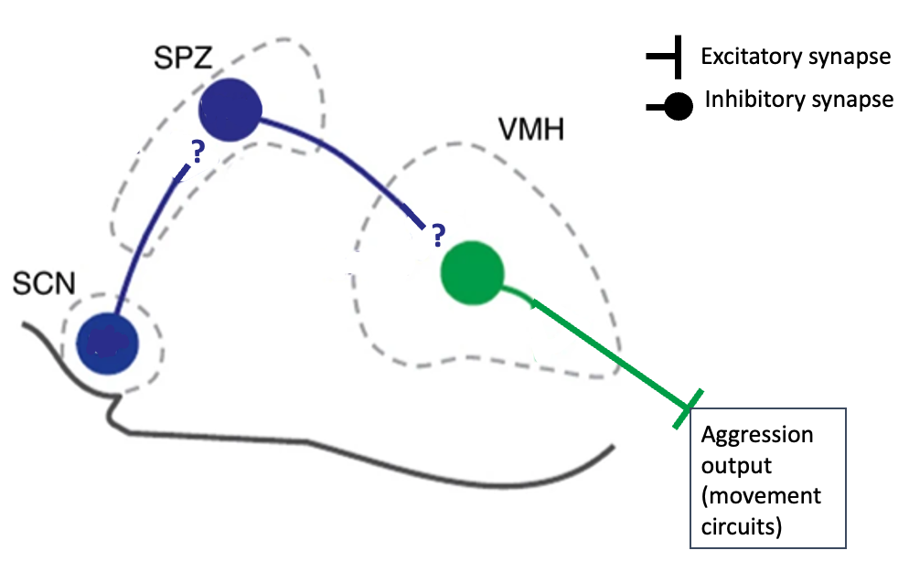
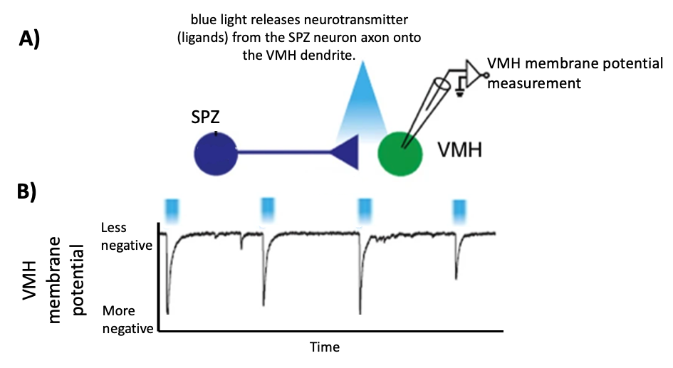
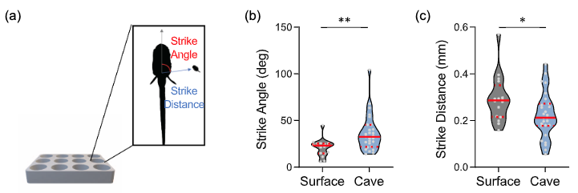
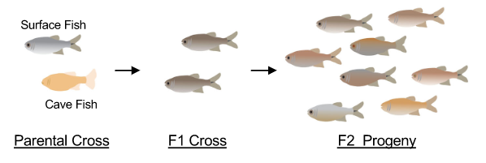
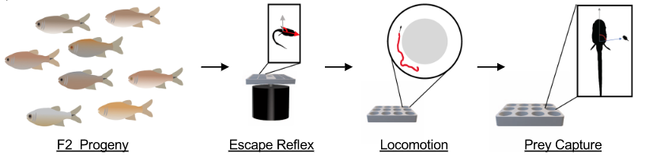
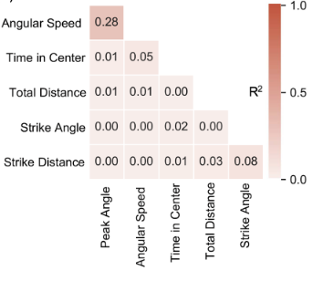
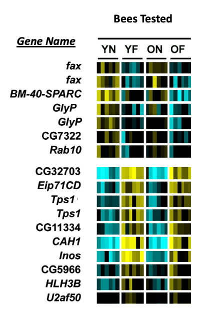

Neural, Hormonal, Genetic, and Development
Contents
Neural, Hormonal, Genetic, and Development¶
Deadline
Due by 11pm on Friday April 14.
Honor Code
This exam is open note/book/web, but must be done independently. Do not consult any other people (regardless of whether they are in or out of this course) or artificial intelligence (AI) in answering the questions. Handing in responses to the assignment for grading serves as your signature of the honor code.
Answer all questions either electronically or by hand. Label each of your answers with the corresponding question number. Scan or convert your document to a good quality PDF. Upload to gradescope by the deadline – make sure to tag all appropriate page(s) in your PDF for each question.
Please don’t hesitate to ask for clarifation on the wording of questions and/or expectations. Key expectations are highlighted with font style. For any multiple choice question that asks for an explanation of your reasoning: provide a correct answer selection as well as your reasoning for selecting that answer - the reasoning should logically (and unabiguously) explain for your answer selection. Not all multiple choice questions require for reasoning.
Section 1: Endogenous rhythms of agression¶
Mice display a daily rhythm of aggressive behavior – their aggressive behavior peaks at the same time each day relative to sunrise/sunset. They tend to be most aggressive at sunset (the end of the day and beginning of the night) and least aggressive at sunrise (the beginning of the day and end of the night).
Q1 (6 points):
Describe an experiment that would enable you to determine whether the daily rhythm of aggressiveness is endogenous or not.
Describe and plot results that you would expect if the daily rhythm is endogenous.
Describe and plot results that you would expect if the daily rhythm is not endogenous.
Recently, Todd and colleagues found, in mice, that a daily pattern of aggression is mediated by a neural circuit linking the suprachiasmatic nucleus (SCN) to the ventrolateral nucleaus of the ventromedial hypothalamus (VMHvl). SCN neuron activity increases during the day and decreases during the night, which provides a neural mechanism to control the daily rhythm of aggressiveness in mice.
{kind=link}
Figure 1 : Schematic drawing of the SCN→SPZ→VMH neural circuit (overlaid on an outline of the brain regions) proposed by Todd et al. VMH neurons activate neural circuits that produce aggression fixed action patterns (FAPs). VMH neurons get synaptic input from SPZ neurons and SPZ neurons get synaptic input from SCN neurons. In this section, you will determine the type of synaptic connection among these three regions.
{kind=link}
Figure 2 : The results of activating SPZ neurons. A ) SPZ neurons synapse onto VMH neurons. The type of synapse (depicted as a triangle) is unspecified in this cartoon. The SPZ neuron in this experiment can be activated by shining blue light on it – when the blue light is on, the neurotranmitter is released from the SPZ axon. The electrode stuck into the VMH neuron measures its membrane potential. B ) Plot of the VMH neuron’s membrane potential across time. Blue tick marks show when the SPZ axon was activated by the blue light.
Q2 (2 points): The results in Figure 2B show that the synaptic connection between SPZ and the VMH is [EXCITATORY / INHIBITORY] because the post-synaptic VMH neuron membrane potential [DEPOLARIZES / HYPERPOLARIZES] in response to activation of the pre-synaptic SPZ neuron. (Choose the appropriate term from each bracketed list to complete the sentence.)
Q3 (2 points): From the data in Figure 2, we can infer that:
(Choose the one correct option from below)
a) The SPZ neurotransmitter increases the permeability of Chloride (Cl - ) ions.
b) The SPZ neurotransmitter increases the permeability of Potassium (K + ) ions.
c) The SPZ neurotransmitter increases the permeability of an ion with an equilibrium potential more negative than the membrane potential of the VMH neuron.
d) The SPZ neurotransmitter increases the permeability of an ion with an equilibrium potential more positive than the membrane potential of the VMH neuron.
Q4 (3 points): (Refer to Figure 1 and to your answer for question 2) If an increase in SCN neuron activity increases aggression (increases the production of aggression FAPs), what type of synaptic connection (inhibitory or excitatory) must exist between SCN and SCZ? Explain your reasoning.
The first step in the generation of aggression is the detection of an aggression-provoking stimulus. In addition to input from the SPZ, VMH neurons get excitatory synaptic input from sensory filters tuned to the smell of conspecifics (for example the smell of unfamiliar male territory intruders that need to be fought off). The magnitude of VMH depolarization from sensory filter input depends on the strength of the aggression-provoking stimulus. If the VMH neuron depolarizes above it’s spike threshold, it will activate neural circuits that produce aggression FAPs.
Q5 (4 points): When the VMH neuron is more hyperpolarized, a [STRONGER/WEAKER] aggression-provoking stimulus is needed to depolarize it above spike threshold.
(Choose the appropriate term from the bracketed list to complete the sentence.)
This neural mechanism is analogous to the Lorenz model of behavior because, in the Lorenz model, the stimulus threshold for a fixed action pattern (FAP) _________________.
(Choose the one correct option from the list below that fills in the blank appropriately.)
a) is constant (does not depend on the current action specific potential)
b) decreases as the action specific potential gets further away from the behavioral threshold
c) increases as the action specific potential gets further away from the behavioral threshold
Q6 (2 points): In analogy to the Lorenz model, what term would best describe the spike threshold of VMH neurons?
(Choose the one correct option from the list below)
a) behavioral threshold
b) stimulus threshold
c) action specific potential
d) spontaneous drive
Section 2: A study of Tetra Behavioral Phenotypes¶
The Mexican tetra, Astyanax mexicanus, consists of populations of fish that inhabit caves in Northeast Mexico, and populations of surface fish, that inhabit the rivers of Mexico and Southern Texas. Critically, these two independent populations can still breed with each other and produce viable offspring (ie. they are interfertile populations).
Recently, purebred populations of cave and surface fish were tested for behavioral differences in locomotor activity, escape reflex movement, and prey capture. Each behavior was quantified by two traits. For example, prey capture behavior was quantified by the strike angle and the strike distance (Figure 3A). The two populations had different behavioral phenotypes (Figure 3B&C).
{kind=link}
Figure 3: Cave fish capture prey with a larger strike angle and shorter strike distance than surface fish.
Q7 (6 points): Refer to Figure 3. Describe an experiment that would enable you to determine whether prey capture behavior in each of these independent populations (surface and cave fish) is genetically inherited or learned from their parents. Summarize in words the predicted results of your experiment under each alternate hypothesis (that the behavior is genetically inherited or that the behavior is learned) and plot those predicted results (just plot the approximate predicted median trait values – no need for the distribution; make sure to label your axes).
After quantifying the behavioral traits of cave and surface fish, the researchers performed a genetic cross experiment (Figure 4). The parental population was comprised of individuals from the isolated cave fish and surface fish populations.
{kind=link}
Figure 4: Surface Fish and Cave Fish were interbred (“parental cross”). Their progeny (F1) were then interbred again to generate an F2 progeny population.1
The escape, locomotion, and prey capture behavior of the fish in the parental population and the F2 population were measured (Figure 5). The specifics of the behavioral trait metrics are not important, but knowing the names of the metrics might help you interpret Figure 6. Escape behavior was quantified by the body’s peak angle during the c-shape phase of the c-start escape and by the angular velocity from the start of the c-shape to the time the body was at its peak angle. Prey capture behavior was quantified by the strike angle and the strike distance. Locomotion behavior was quantified by the time in the center of the arena and the total distance moved during the test.
{kind=link}
Figure 5: The behavioral traits of each of the F2 progeny were measured.1
{kind=link}
Figure 6: Correlations among pairs of behavioral traits in F2 offspring. The correlation (R2) between each pair of traits is written in the corresponding square and color-coded by value. The only significant correlation was between the two escape traits: Angular Speed and Peak Angle (correlation = 0.28).1
Q8 (3 points): From the results shown in Figure 6, the researchers could infer that:
(Choose the one correct option from the list below. Then, explain your reasoning.)
a) The genes for the escape behavior traits are “linked” to the genes for all other behavioral triats tested.
b) The genes for the escape behavior traits are more likely to recombine during chromosome crossover events than the genes for the other traits.
c) The genes for locomotion behavior are likely on different chromosomes than the genes for prey capture behavior.
d) Escape behavior is the only behavior that is significantly genetically inherited.
Q9 (2 points): QTL analysis is different from the analysis shown in Figure 6 because:
(Choose the one correct option from the list below)
a) QTL analysis measures the correlation between genes, not behaviors.
b) QTL analysis actually tells you the genotype that codes for each trait.
c) QTL analysis assesses correlations between the genotype of specific chromosomal regions and the behavioral phenotypes rather than correlation between behaviors.
Q10 (2 points): If F2 progeny were kept in an isolated cave environment and left to breed for many future generations, which of the following outcomes would you predict?
This experimental cave population would:
(Choose the one correct option from the list below)
a) eventually evolve the phenotype of the original cave fish parental population because they are under the same selective pressures as the cave fish parental population.
b) maintain a mix between cave and surface fish phenotypes because the phenotypes are genetically inherited rather than learned.
Section 3: Nurse and Forager Bees¶
In honey bees, there are two different behavioral phenotypes among workers. The differences in individual phenotype are correlated with differences in age. During the first 2-3 weeks of adult life, workers exhibit the nurse phenotype and perform several different tasks in the hive, including brood care. After 3 weeks a worker will generally shift to the forager phenotype and leave the hive in search of nectar and pollen. The shift in behavioral phenotype occurs with a shift in morphological traits as well.
However, the timing of the transition from nurse to foraging phenotype is variable and depends on the needs of the colony. If there are more foragers than necessary in the colony, then nurses will delay their transition to the foraging phenotype and remain a nurse until they are older (“old nurse”). If there are not enough foragers in the colony, then nurses will transition to the foraging phenotype at a younger age (“young forager”).
{kind=link}
Figure 7: Genes expressed (transcribed and translated) in worker bees of different ages and phenotypes (YN = young nurse; OF = old forager; YF = young forager; ON = old nurse). Gene expression levels (measured as RNA levels) are indicated by color scale: yellow = high expression levels; blue = low expression levels. Each row is labeled according to the measured gene. Each column shows gene expression results from an individual bee (the experimental group of each set of 6 bees is labeled across the top).2
Q11 (2 points): The expression levels of gene CG32703 is more correlated with:
(Select the one correct choice)
a) behavioral phenotype (nurse versus forager) than with age (young versus old).
b) age (young versus old) than with behavioral phenotype (nurse versus forager).
Q12 (2 points): Based on the information and data provided in Figure 7, which of the following is a true statement?
(Select the one correct choice)
a) Nurse and forager phenotypes in bees are an example of a polyphenism because the nurse/forager phenotypes are explained by differences in gene expression rather than differences in the worker gene allele.
b) Nurse and forager phenotypes in bees are an example of a polymorphism because nurses and foragers must have different morphological features to do these different jobs.
c) Nurse and forager phenotypes in bees are an example of a polyphenism because nurse/forager phenotypes are caused by different alleles of the same worker gene.
Q13 (2 points): Based on the information and data provided in Figure 7, which of the following is a true statement?
(Select the one correct choice.)
a) Foraging and nurse behaviors are learned rather than inherited because gene expression changes depending on what phenotype the bee is.
b) Young bees are usually nurses, but can become foragers if epigenetic changes transform nurse bee genes into forager bee genes.
c) Epigenetic changes to the DNA/chromatin of young bees are regulated by a neural/hormonal mechanism that senses how many nurses and foragers there are in the colony.